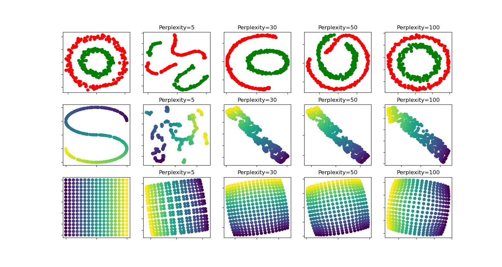

Nota
Haz clic aquí para descargar el código de ejemplo completo o para ejecutar este ejemplo en tu navegador a través de Binder
t-SNE: El efecto de varios valores de perplejidad en la forma¶
Una ilustración de t-SNE en los dos círculos concentrados y los conjuntos de datos de curvas S para diferentes valores de perplejidad.
Observamos una tendencia hacia formas más claras a medida que aumenta el valor de perplejidad.
El tamaño, la distancia y la forma de los clusters pueden variar según la inicialización, los valores de perplejidad y no siempre transmite un significado.
Como se muestra a continuación, t-SNE para perplexidades más altas encuentra una topología significativa de dos círculos concéntricos, sin embargo, el tamaño y la distancia de los círculos varía ligeramente del original. Contrario al conjunto de datos de los dos círculos, las formas divergen visualmente de la topología de la curva S en el conjunto de datos de la curva S, incluso para mayores valores de perplejidad.
Para más detalles, «How to Use t-SNE Effectively» proporciona una buena discusión de los efectos de los diferentes parámetros, así como gráficos interactivos para explorar esos efectos.
Out:
circles, perplexity=5 in 9.2 sec
circles, perplexity=30 in 12 sec
circles, perplexity=50 in 8.2 sec
circles, perplexity=100 in 9.7 sec
S-curve, perplexity=5 in 9.1 sec
S-curve, perplexity=30 in 11 sec
S-curve, perplexity=50 in 7.4 sec
S-curve, perplexity=100 in 14 sec
uniform grid, perplexity=5 in 9.7 sec
uniform grid, perplexity=30 in 14 sec
uniform grid, perplexity=50 in 8.5 sec
uniform grid, perplexity=100 in 21 sec
# Author: Narine Kokhlikyan <narine@slice.com>
# License: BSD
print(__doc__)
import numpy as np
import matplotlib.pyplot as plt
from matplotlib.ticker import NullFormatter
from sklearn import manifold, datasets
from time import time
n_samples = 300
n_components = 2
(fig, subplots) = plt.subplots(3, 5, figsize=(15, 8))
perplexities = [5, 30, 50, 100]
X, y = datasets.make_circles(n_samples=n_samples, factor=.5, noise=.05)
red = y == 0
green = y == 1
ax = subplots[0][0]
ax.scatter(X[red, 0], X[red, 1], c="r")
ax.scatter(X[green, 0], X[green, 1], c="g")
ax.xaxis.set_major_formatter(NullFormatter())
ax.yaxis.set_major_formatter(NullFormatter())
plt.axis('tight')
for i, perplexity in enumerate(perplexities):
ax = subplots[0][i + 1]
t0 = time()
tsne = manifold.TSNE(n_components=n_components, init='random',
random_state=0, perplexity=perplexity)
Y = tsne.fit_transform(X)
t1 = time()
print("circles, perplexity=%d in %.2g sec" % (perplexity, t1 - t0))
ax.set_title("Perplexity=%d" % perplexity)
ax.scatter(Y[red, 0], Y[red, 1], c="r")
ax.scatter(Y[green, 0], Y[green, 1], c="g")
ax.xaxis.set_major_formatter(NullFormatter())
ax.yaxis.set_major_formatter(NullFormatter())
ax.axis('tight')
# Another example using s-curve
X, color = datasets.make_s_curve(n_samples, random_state=0)
ax = subplots[1][0]
ax.scatter(X[:, 0], X[:, 2], c=color)
ax.xaxis.set_major_formatter(NullFormatter())
ax.yaxis.set_major_formatter(NullFormatter())
for i, perplexity in enumerate(perplexities):
ax = subplots[1][i + 1]
t0 = time()
tsne = manifold.TSNE(n_components=n_components, init='random',
random_state=0, perplexity=perplexity)
Y = tsne.fit_transform(X)
t1 = time()
print("S-curve, perplexity=%d in %.2g sec" % (perplexity, t1 - t0))
ax.set_title("Perplexity=%d" % perplexity)
ax.scatter(Y[:, 0], Y[:, 1], c=color)
ax.xaxis.set_major_formatter(NullFormatter())
ax.yaxis.set_major_formatter(NullFormatter())
ax.axis('tight')
# Another example using a 2D uniform grid
x = np.linspace(0, 1, int(np.sqrt(n_samples)))
xx, yy = np.meshgrid(x, x)
X = np.hstack([
xx.ravel().reshape(-1, 1),
yy.ravel().reshape(-1, 1),
])
color = xx.ravel()
ax = subplots[2][0]
ax.scatter(X[:, 0], X[:, 1], c=color)
ax.xaxis.set_major_formatter(NullFormatter())
ax.yaxis.set_major_formatter(NullFormatter())
for i, perplexity in enumerate(perplexities):
ax = subplots[2][i + 1]
t0 = time()
tsne = manifold.TSNE(n_components=n_components, init='random',
random_state=0, perplexity=perplexity)
Y = tsne.fit_transform(X)
t1 = time()
print("uniform grid, perplexity=%d in %.2g sec" % (perplexity, t1 - t0))
ax.set_title("Perplexity=%d" % perplexity)
ax.scatter(Y[:, 0], Y[:, 1], c=color)
ax.xaxis.set_major_formatter(NullFormatter())
ax.yaxis.set_major_formatter(NullFormatter())
ax.axis('tight')
plt.show()
Tiempo total de ejecución del script: (2 minutos 14.437 segundos)